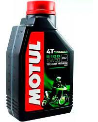
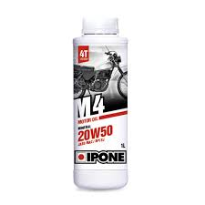
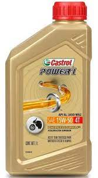

LOS MEJORES ACEITES
MOTUL
l aceite es una parte esencial para un buen funcionamiento del motor de tu vehículo, ya que tiene la función de limpiar y lubricar, buscando así protegerlo ante desgaste y corrosión. Motul muestra una gran dedicación a la excelencia, a través de la innovación y la conexión con su comunidad, busca crear aceites que brindan eficiencia duradera.
PRECIO 20.000$
IPONE
El aceite es una parte esencial para un buen funcionamiento del motor de tu vehículo, ya que tiene la función de limpiar y lubricar, buscando así protegerlo ante desgaste y corrosión.
precio 25.000
CASTROL
CARACTERÍSTICAS: Marca: CASTROL Modelo o Submarca: POWER1 Categoría de servicio: Motos Características de uso: Aceite para motor Grado del aceite de motor: 15W-50 Origen: Argentina Tipo de aceite de motor: Semisintético Tipo de contenedor: Botella / Bidón Volumen del aceite: 1 litro
precio 15.000